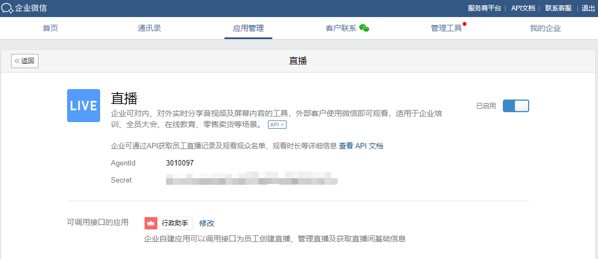

目录
企业和开发者通过直播接口，可以便捷地创建直播、管理直播、获取观看入口及查询直播间明细和统计信息。
系统应用“直播”默认可使用直播相关接口，其他应用则需先配置调用权限方可使用
自建应用自建应用需要配置在“可调用接口的应用”里
第三方应用第三方服务商创建应用的时候，需要开启“直播接口权限”
创建预约直播修改预约直播取消预约直播删除直播回放在微信中观看直播或直播回放获取成员的直播ID列表获取直播详情获取直播观看明细
创建立即直播观看直播观看直播回放下载直播回放（目前仅PC端支持）